|
Larger than Life: The
Terracotta Sculptures of India
Article by Ron du Bois
Photos by Ron du
Bois, 1980, unless otherwise stated. ©
Massive terracotta horses have been built by Tamil villagers in
south India for thousands of years. Stephen Inglis states that "technically
they are the most ambitious achievements in clay found in India
and by any survey probably the largest hollow clay images to be
created anywhere" (1).
| 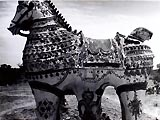
|
Massive terracotta Horse. Environs
of Puthur, Tamilnadu, South India. This fifty year old massive
clay image was fired on site. Because the fired surfaces are
porous a solution of oxides used as colorants are easily absorbed
and thus made durable. Fifty years have altered them only slightly.
Although the annual rains soak the porous clay, no harm results
because Tamilnadu never freezes. In other climates water penetrating
the clay could freeze and expand causing disintegration within
a season. |
 |
Created from sacred temple ground, this horse
now stands purified by fire. No cracking or breakage due to
trapped air or moisture occurred. The non-ceramic decoration
of calcium carbonate and water penetrates the porous clay and
thus becomes durable. Rain and subsequent freezing weather could
spell the the disintegration of such massive clay images within
a season...but the temperature in Tamilnadu is always warm,
and thus the images stand for generations. |
The methods used to construct and to fire images nine to fifteen
feet or more in height are unique in ceramic history and of unusual
interest to clay specialists. They differ dramatically from the
images of horses and soldiers recently excavated in China, in that
they are larger than life-size and fired in situ. Not only is the
size impressive, but the proportions and embellishment are superb.
These works are created by a caste of hereditary potter/priests
who are products and heirs of an ancient tradition in which clay
and religion are inseparably linked.
  |
| This massive terracotta Aiyanar horse image
was built around 1955. It is distinctive for its high relief
modeling. Much the original white wash is still extant. The
high relief elements are technically possible because copious
amounts of temper (rice straw) are mixed in the clay. |


Detail of relief modeling, 18 inches high, on
neck of ancient Aiyanar terracotta horse. Environs of Puthur,
near Chidambarum, Tamilnadu, India. |
Yet because the images are built in remote village shrines they
have been virtually ignored by scholars. As Inglis observes, "visitors
to Tamil Nadu may catch a glimpse of such images from the window
of a bus or train yet an interest once aroused is difficult to pursue.
 Katervil, master craftsman in clay, is known
throughout the region as a specialist for his skills in building
votive terracotta horse images as well as those built in cement.
He can make every type of utilitarian pottery as well. Heir
to an ancient tradition, his ancestors have practiced similar
skills for thousands of years. He is a "velar", or Tamil potter-priest.
Here he rests beneath the breast of of the horse on which he
has just completed the modeling of "Yallee", spirit guide, protector
of Aiyanar, able to see in all directions, able to see into
the future. Mystical skills enable him to guide the horse safely.
Katervil, master craftsman in clay, is known
throughout the region as a specialist for his skills in building
votive terracotta horse images as well as those built in cement.
He can make every type of utilitarian pottery as well. Heir
to an ancient tradition, his ancestors have practiced similar
skills for thousands of years. He is a "velar", or Tamil potter-priest.
Here he rests beneath the breast of of the horse on which he
has just completed the modeling of "Yallee", spirit guide, protector
of Aiyanar, able to see in all directions, able to see into
the future. Mystical skills enable him to guide the horse safely. |
Tamil people of the cities know little of them and for the ordinary
village people, work on such images involves skills and a sacred
ritual of which they have little knowledge. The work is almost never
seen in big towns or cities, sold in fairs, or otherwise displayed.
Although some attention has been given by scholars to the religious
complex in which they playa part, information about massive images
and the craftsmen who build them is not to be found in the literature
on south India" (2).
In May, 1980, as an Indo-American Fellow, I was able to observe
at first hand, in remote and abandoned village shrines, ancient
examples of these massive terracotta horses "with fiercely
noble heads standing ready to carry god or demon" (3).
As I looked at them, numerous questions came to mind: How old were
they? Who made them? What was their purpose? Were they still being
made? How could such huge clay images be fired? How could passages
of clay varying in thickness from two to sixteen inches be dried
and fired without mishap of any kind?
The answers to these questions would shed new light on the methods
used in the past by the Etruscans, the Chinese, and pre-Columbian
peoples to create such larger-than-life terracotta images. The
craftsmen who made them clearly used methods of construction and
firing outside the spectrum of Western ceramic skills and processes.
Few, if any clay specialists in the Western world would attempt
to build and fire on-site ceramic sculpture of such monumental scale.
Through the unfailing support of Ray Meeker and Deborah Smith of
the Golden Bridge Pottery in Pondicherry, I found some important
answers. Former students of Susan Peterson, they are the only American
potters successfully producing hand-thrown stoneware in India at
present.
Their plan of organization made the documentation possible. Intrigued
with the projected filming of the construction of an Aiyanar horse,
they offered me the use of their recently purchased jeep to search
for Aiyanar shrines and potters. The three of us, together with
Ray's assistant, Ratchagar, to serve as translator, set out on a
four-wheel drive field trip.
On a single day's outing, we sighted five Aiyanar shrines in the
outskirts of Chidambaram. Each of the sites held one or more terracotta
horses, each ten to twelve feet high constructed within the last
one hundred years. The surface decoration, in most cases, had weathered
away and the patina indicated considerable age. There was nothing
to indicate the date or the names of either the potters or donors.
Such facts were never recorded.
| 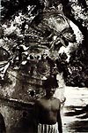 |
This ancient terra
cotta horse was built and fired on site some one hundred years
ago. It measures over ten feet in height. The high relief images
on the neck of the horse image were modeled of clay with an
admixture of straw. The images symbolize spirit attendants who
ride with Aiyanar at night to guard the village boundary. |
|
Detail of ancient horse (with
villager standing in front): The high relief images on the neck
of the horse were modeled with the solid clay mixture. They
symbolize spirit attendants who ride with Aiyanar at night to
guard the village boundary. |
 |
About 100 years old,
four massive terra cotta horses constructed and fired on site
stand in a seemingly abandoned Aiyanar shrine. |
Were such horses still being built? Thanks to my friends' fluency
in Tamil we soon found a pottery community reputed to have horse-
building skills in the village of Puthur, sixteen kilometers from
Chidambaram. When we found the earth and thatch dwellings of the
potters, we discovered an Aiyanar shrine nearby complete with a
huge standing terracotta horse, which the potters claimed was more
than one hundred years old. Near the older form was a more recent
horse built of cement, a material that has now almost completely
replaced clay as the medium for shaping ritual images. To the west
stood a large cement image of Aiyanar and to the south, a shrine
housed a much smaller image flanked by two consorts. The shrine
is in active use. Each evening some forty villagers worship there,
the women touching their foreheads to the ground and the men prostrating
themselves completely.
The indigenous religious system, involving the belief in a male
deity, at once hero, protector, companion, and councilor, is Dravidian.
It predates by centuries the Aryan introduction of Hinduism with
its complex pantheon of deities in the second millennium B.C. During
the Middle Ages, in order to upgrade and legitimize Aiyanar through
association with mainline Hinduism, devotees evolved the story of
his birth as a son of Shiva and Vishnu (in the form of a beautiful
woman). Aiyanar helps on many important occasions in life -to choose
a bride or groom, to cure sickness, or to punish a wrongdoer. He
holds a metal sword in his hand on which devotees thrust paper messages
stating their various problems. Often the solutions are revealed
in dreams.
 |
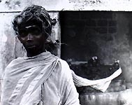 |
| S. Kalia Perumal was an important member of
the four man crew who constructed the horse. |
This potter's wife standing before the shrine
is in a state of trance. The closer presence of Aiyanar and
the forces of village deities stimulate states of possession.
For some their bodies temporarily become containers of the divine. |
We learned that the last large Aiyanar horse was commissioned
more than twenty years ago. But the potters assured us they still
knew how to build one. Would they do it? Would they accept a commission
from a non-Hindu - a foreigner? I was impressed with the potters
and had a genuine sympathy and liking for Aiyanar and his shrines.
Unlike Hindu temples, his shrines were always located in secluded
country areas in which trees were a necessary and auspicious component.
They were restrained-the sculptural quality of the clay or cement
images was stable and impressive. Perhaps the potters were moved
by my positive attitude and interest in Aiyanar; at any rate, they
decided to accept the commission. They agreed to build a horse nine
feet high in twenty days; it was to be situated next to the existing
horses. They quoted a price of 500 rupees. After haggling, they
reduced the figure to 400 rupees- ($48.00) - a good price by Indian
standards but by Western standards extremely low when one considers
that four or five men would work for twenty days to complete the
commission.
Day One:
They knew their business. On Monday, May 26, 1980, a puja (ritual)
was held to ensure the success of the project. To consecrate the
ground on which the horse was to be built, the potters encircled
the area using the blood streaming from the neck of a decapitated
rooster. Coconut halves were placed to each side of the area.
Liquor, an essential ritualistic ingredient, was present although
Tamil Nadu is a "dry" state. Technically, liquor is
illegal but this was "home brew," which escaped official
scrutiny. Food offerings to Aiyanar completed the ritual. Secure
in the assurance that Aiyanar was now companion to the project,
the potters began construction.
The preparation of the clay had taken place the day before. A circular
earth pit about four feet in diameter served as a mixing trough.
One part sedimentary earthenware is mixed with one part earthenware
topsoil. Although fine-grained, it contains silt. To this enough
water is added to produce a medium-viscosity slurry. The potters
knew this clay would fail as a medium for building large sculpture.
Large quantities of non-plastic ingredients are essential to prevent
shrinkage and hence cracking, as well as to permit thick passages
of clay. The non-plastic ingredients consist of three parts rice
hulls and approximately one part (by volume) of three-to-four-inch
lengths of rice straw. The potters added this to the earthenware
slurry and mixed it by foot to produce a medium soft mixture possessing
all the qualities of a "castable."
 
|
| First Day of Construction. Aiyanar
Shrine, Puthur, Tamilnadu, South India, 1980. Holes 12"
deep and 12" wide were excavated in the ground possible
to relieve air pressure during firing. Katervil applies a heavy
coil of clay with an admixture of rice straw to form the "hooves",
the first stage in the construction of a massive terracotta
horse. These constitute the first procedures in the construction
of a massive Aiyanar horse image. When completed it will stand
ten feet high. In the background stands an ancient terracotta
horse said to be 100 years old. |
Large coils of this material were used to form rings around previously
inscribed twelve-inch circles on the ground marking the four "hoofs"
of the horse. A second coil of clay joined to the initial ring
extended the diameter to sixteen inches. Four of these clay rings
were formed to establish the four "hoofs" of the horse's
legs. This accomplished, a potter, using a metal excavating tool,
dug holes approximately twelve inches deep inside each ring of
clay. A potter set a wooden pole about six feet high inside one
hole and held it while a colleague quickly filled the entire hole
with clay thus supporting the pole in a vertical position. In
a similar fashion, vertical poles were set in the three remaining
holes. Each wooden pole, therefore, was supported by a solid mass
of clay mixture about sixteen inches across and twelve inches
deep. Without the use of rice hulls and straw such passages would
shrink and crack.
These ingredients are the major part of the mixture by volume
and are essential to this type of monumental clay construction.
The last part to be constructed was a clay base for the central
rectangular support, 24" x 24". This completed the first
day's work. Nothing further could be done until the moist clay
mixture stiffened.
The potters spent their time in the afternoon preparing ropes
made of rice straw. Wrapped around the wooden uprights these ropes
create a compressible internal support system for the application
of about a four-inch wall of clay thereby eliminating any possibility
of the clay cracking as it dries and contracts.
 Woman Creating a Colam. Colams are ritual diagrams
or drawings that welcome the dawn, or gods to their festivals.
They illustrate the power of geometricity to create a force
field or maze by which untoward forces are confused and thus
kept at bay. Mostly women create the geometric designs with
rice flour. Colams celebrate the impermanence of art and art
as an essential aspect of daily devotion. Their beauty of form
and endless variety are at once decoration and ritual.
Woman Creating a Colam. Colams are ritual diagrams
or drawings that welcome the dawn, or gods to their festivals.
They illustrate the power of geometricity to create a force
field or maze by which untoward forces are confused and thus
kept at bay. Mostly women create the geometric designs with
rice flour. Colams celebrate the impermanence of art and art
as an essential aspect of daily devotion. Their beauty of form
and endless variety are at once decoration and ritual. |
Day Two:
On the morning of the second day of construction the potters completed
the task of winding the straw ropes around the four wooden uprights.
They then applied a four-inch wall of clay so that four large tubes
about 40 inches tall were formed, each serving as a metaphorical
leg. Next, four vertical uprights were fixed at the inside comer
of the base of the central rectangular support previously completed.
Straw ropes were wound around them to create an armature for a thick
application of clay. The potters worked surely and quickly in spite
of a 112 degree Fahrenheit temperature. Descendants of generations
of clay craftsmen, they have learned the skills from childhood and
are concerned only with the work at hand, In the afternoon they
completed the front and rear legs and the central rectangular support.
The front legs now stood as a single unit 44 inches high, 38 inches
wide, and 17 inches across, measured at the top center. By fixing
wooden supports to the wooden uprights, the potters created a horizontal
passage of clay that bridged the two front and rear legs. The clay
mixture was laid over and under these supports to create a level
horizontal surface. This completed, nothing more could be done until
the horizontal passages of clay stiffened.

|
 |
| The legs of the horse are constructed
of four wooden poles, rice straw, and rope. Clay slurry is applied
over all. The potters bridged the front and rear legs. |
The two front legs are now stiffened.
Katervil uses a wooden support covered with rice straw to form
a compressible internal support. As the thick clay passages
dry and shrink the internal straw support compresses to prevent
cracking. |
Day Three:
On the morning of the third day, additional wood supports were placed
horizontally to connect the front legs to the central support and.
then to the rear legs' unit. The potters molded the horse's under-belly
by laying "gobs" of the clay directly on the wood supports
(both above and underneath); this process produced a slab four inches
thick, seven feet, ten inches long, and thirty-four inches wide!
Such a feat was possible only because of the wooden internal support
system.
| 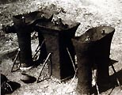 |
| Third Day of Construction. To bridge the pillars
forming the legs and the central support unit clay was applied
over horizontal lengths of wood wrapped with rice straw held
in place with rope. To prevent cracking rice straw is essential
as an internal support because it compresses as the clay dries
and shrinks. Four wooden poles wound with rope and rice straw
formed an internal support on which clay was applied to form
the central support unit. The height of all three units is three
feet, eight inches. |
After the burning rays of the sun had stiffened the slab, the
potters next added coils of clay to form the curve of the belly,
a process which added seven inches to the height. They tapered
the edge of the final coil. When the clay was stiff, the diagonal
slant provided a broader surface and hence a good join for the
next application of clay.
Day Four: In the afternoon the potters, using
thick gobs of the basic clay mixture, modeled the figure of the
guardian (or groom) of Aiyanar's horse directly on the surface of
the central support form.
  
The modeling of the image of Aiyanar's groom
starts with massive gobs of the clay mixture and will be finished
with a levigated slip mixed with sand. This older, mustached
image symbolizes the neither aspects of the deity's nature.
Katervil's deft fingers bring the image to life and vitality.
Potter-priest and master clay craftsman of both utilitarian
and sculptural forms, he models the groom of Aiyanar with thick
gobs of clay on the central support of a massive Aiyanar horse
image. He, poses beside the completed form which took two hours
to complete. |
| 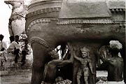
An older, moustached image on the opposite
side of the central support column symbolizes the neither
aspects of Aiyanar's nature...dark and problematic. The smooth,
ever youthful groom seen here symbolizes his divine nature. |
Day Six: lengths of bamboo are placed inside
the figure to complement exterior supports.
| 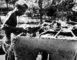Katervil
laid wooden sticks horizontally to connect the front legs, central
support column and rear legs. He applied the clay mixture around
these supports to form a horizontal slab, thirty-four inches
wide by seven feet ten inches long. |
 Horizontal
lengths of bamboo (one visible on the top interior wall) are used
to support the walls and to reduce accidental damage by children
or cows. Because the shrine is sacrosanct there is no intentional
vandalism. Horizontal
lengths of bamboo (one visible on the top interior wall) are used
to support the walls and to reduce accidental damage by children
or cows. Because the shrine is sacrosanct there is no intentional
vandalism.
Some of the passages were four inches thick, attesting
to the non-plastic nature of the basic clay mixture. An application
of pure clay over the coarse basic clay followed, and detailing
was done with fingers and a wooden modeling tool. The modeling skills
are of a high order and result in a figure with remarkable spring
and incipient energy.
 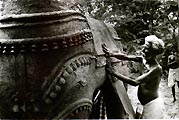 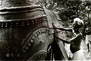 |
| Katervil and two assistants are shown in process
of hand modeling in high relief the bells associated with Hindu
and some village deities. In the modeling of the jewels, bells,
and other decorative details, the intersection of the potter's
skills and the common elements of Indian design are seen. The
decorative clay bands are identical to those applied to mounts
on great temples by stone carvers, and to processional mounts
and decorative architecture by wood workers...the skills of
the garland and harness maker all flow behind the potter's skill. |
 |
 |
| Ron du Bois and 16mm film
camera. Aiyanar Shrine, Puthur, Tamilnadu, South India, 1980.
An attendant holds an umbrella over the camera to protect
it from the blistering sun. At 114 degrees F., the camera
could become burning hot and the canister of film inside ruined.
A homemade evaporative cooler was devised to store and save
the 16mm film canisters from damage. They were kept dry by
placing them a lidded plastic container. This in turn was
placed within a large terracotta vessel. Sand poured around
the plastic storage container was then watered to cool the
film by evaporation.
|
7th Day of Construction. Ron
du Bois, Indo American Fellow, with massive terracotta horse
in process of construction. The final height of the massive
sculpture was nine feet, ten inches. An ancient terracotta
horse built over 100 years ago is seen in the background. Photo
by Ray Meeker, 1980. |
The basic clay mixture is similar to what, in the West, is considered
to be a "castable" -a clay body suitable for bricks, refractory
linings, or kiln construction but rarely considered as suitable
for ceramic sculpture. Again, to the Western craftsman, a kiln for
firing ceramic sculpture would appear essential. As a result he
limits himself to forms that can be lifted and moved into a kiln.
The idea of firing "in situ" at the site of construction
rather than in a studio/workshop has never been the practice. Permanent
kilns, plumbing and wiring for gas, oil, or electricity have all
been part of the Western paradigm - yet the Etruscans, pre-Columbians,
Africans, and the potter-priests of India as well all constructed
temporary clay walls for on-site firing of monumental ceramic forms.
| 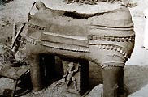 |
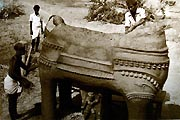 |
| Only a portion of the back form is closed.
To form the tail a wire serves to support solid masses of the
soft clay mixture. |
The back is then completely closed by a massive
clay slab supported by shards placed on sticks within the horse. |
 |
A red slip or sigillatta
is applied to seal and to smooth the course surface. The length
of the horse is thirteen hands, the height of both torso and
legs is each four hands. The length of the still to be built
neck will be four and one-half hands. These proportions passed
from father to son may be adjusted only slightly depending on
the judgment of the team leader. |
| 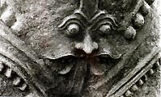 |
The face on the breast of the
horse is Yallee...it's fierce gaze guides the god on his nightly
rides. Developed over the ages this image is shared with the
Hindu art of large towns and cities, but is now part of the
village modeling tradition. Able to see in all directions, able
to see into the
future. Because of this he guides the horse safely |
Day Nine: The entire neck, saddle and tail
are complete.
 |
Right: To prevent sagging a wooden
brace was used to support the mass of soft clay used to form
the head. It is now the 10th morning and the clay has stiffened
overnight. The potters work to complete the final details -
eyes, ears, bridle, mouth, teeth and tongue. |
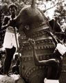 |
Day Twelve: Moist earth chopped from an adjacent
drainage ditch was carried by baskets to the construction site to
form the wall for an "open Field" firing. At a height of 18 inches
it is left to stiffen before adding more earth. A 10 inch wall thickness
is maintained until the final height of five feet is attained.
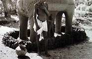
Right: The image peeks out, almost completely
covered by earth, clay vessels, wood, dung, and straw. As the
wall grows around the image, the image of the beast inside is
felt. The horse remains an almost mythical creature in South
India ...imported in small numbers for the ancient kings, and
now transformed from clay into the mount of a god.
 
A slurry made from ditch mud and water is carried
in baskets and poured over the straw...five men take only twenty
minutes to spread the thick slip over the entire surface and
to overlap the clay wall. The fire is started through a firehole
igniting the layers of straw, dung and wood that surround and
support the figure. |
Day Fourteen: The firing is completed within
three hours.
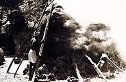
The potters brought the project to a conclusion with
a final puja (religious ceremony) and a "bringing to life"
of the successfully fired and decorated horse. It is hoped that
these notes and photographs will benefit Western craftsmen and serve
to enhance internationally the most impressive but little-known
skills of Indian potters.
Download a one minute video of the pre-construction
puja ceremony. Warning - this video contains footage of an animal
sacrifice that may be distressing to some viewers. Download
video (6.5 Mb, Quicktime movie).
Footnotes:
- 1-2 Stephen R. Inglis, "Night Riders: Massive Temple Figures
of Rural Tamil Nadu, in V. Vijayavenugopala (ed.) A Festschrift
for Prof. M. Shanmugam Pillai, Madurai University Press, 1980.
- 3 Stella Kramrisch, Unknown India: Ritual Art in Tribe and Village.
Philadelphia Museum of Art.
Ron du Bois, an emeritus professor of art, taught ceramics and studio
art at Oklahoma State University, USA. He was Fulbright professor
to Korea in 1973-74, where he taught ceramics at three Korean universities.
His award winning documentary, The Working Processes of the Korean
Folk Potter, was filmed at that time. In 1979-80, du Bois traveled
extensively in India as a 1979-80 Indo-American fellow to research
and document the work of Indian potters. Among other projects he
filmed the entire construction of perhaps the last massive terracotta horse to be built in India. The documentary, "The Working
Processes of the Potters of India: Massive terracotta Horse Construction"
was completed under the auspices of the National Endowment for the
Humanities and deals with the subject matter of this article. In
1987, du Bois was awarded a 10 month Fulbright Senior Research Scholar
grant, African Regional Research program, to research and document
Nigerian potters. For information on his POTTERS OF THE WORLD FILM/VIDEO
SERIES contact: Ron du Bois, Professor Emeritus, http://www.angelfire.com/ok2/dubois,
612 S. Kings St., Stillwater, OK 74074, (405) 377-2524, email: duboisr@sbcglobal.net,
fax: 1-405-372-5023
Also by Ron du Bois: A Saga of Synchronicity
-
Making a Film Documentary on African Ceramics
More Articles
|


{kind=link}
{kind=link}
{kind=link}
{kind=link}
{kind=link}
{kind=link}
{kind=link}
{kind=link}
{kind=link}
{kind=link}
{kind=link}
{kind=link}
{kind=link}
{kind=link}
{kind=link}